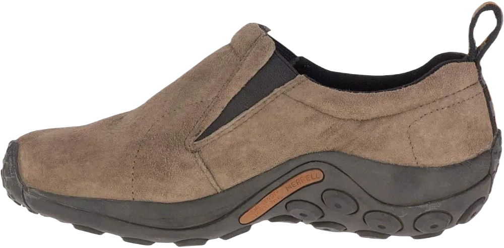
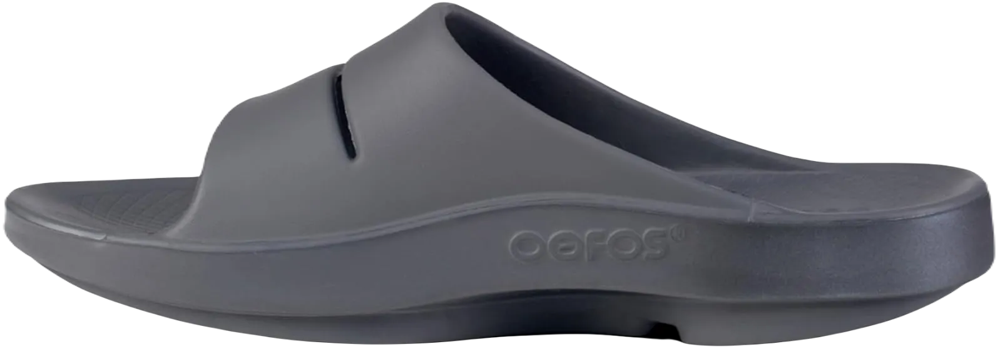
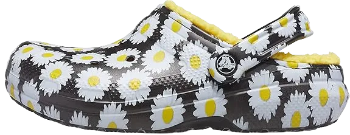

10 Best Shoes for Surgeons 2024 Reviews
Choosing the right footwear is a significant challenge for surgeons, as their job demands hard work, dedication, and extended hours of continuous movement.
Surgeons typically opt for shoes that prioritize comfort and ease of mobility due to the long hours spent performing surgical procedures and navigating through the hospital. Breathability is also crucial to ensure that the shoes do not cause discomfort, especially for female doctors who need reliable footwear for prolonged wear.
-
#1
Crocs Men’s Clog
.webp)
At the top of the list for surgeons' footwear is a brand that caters to both men and women. According to reviews, surgeons around the globe agree that Crocs produces one of the best pairs of shoes specifically designed for their needs.
This widespread preference for Crocs stems from the brand’s focus on design and comfort, making it a popular choice among medical professionals. These shoes offer unparalleled comfort, durability, and convenience, which are essential for surgeons.
The lightweight nature of these shoes promotes maximum mobility during long hours of work. The materials used in their construction allow for excellent breathability, making them particularly comfortable for female surgeons during extended shifts. Additionally, they feature ventilation holes that enhance overall comfort. -
#2
Skecher’s for Work Men’s Flex
.webp)
This comfortable shoe is specifically designed for male surgeons, and Skechers claims to offer the most comfortable footwear for hardworking medical professionals. According to online reviews, this pair is currently the top seller on Amazon in the category of surgical shoes.
They feature a convenient slip-on design, making them easy to wear during busy shifts. Constructed entirely from synthetic materials, these shoes are both durable and flexible. The upper part is made from mesh, allowing for enhanced flexibility during those long hours on your feet.
In addition to flexibility, these shoes promote breathability, which is crucial for maintaining comfort during extended work periods. The insole is crafted from memory foam, providing increased cushioning and maximum support. Additionally, the design includes slip-resistant features, ensuring safety on potentially slippery hospital floors. -
#3
Merrell Men’s Encore Gust
.webp)
Next on our list is a pair of shoes from the renowned brand Merrell, specifically designed for men. Unfortunately, this option isn’t suitable for female surgeons. Before we dive into the details, it’s important to note that while these shoes are not the most budget-friendly, the comfort they offer is unparalleled.
This shoe features a straightforward slip-on design crafted from full-grain leather, ensuring excellent breathability.The outsole is made from soft rubber, providing maximum mobility throughout the day, which is essential for surgeons on the move. The footbed utilizes Ortholite material, contributing additional comfort and support.
Furthermore, it incorporates an EVA foot frame made from molded compression, which enhances both comfort and stability during long shifts. To top it off, the shoe features a padded collar that alleviates pressure on the ankles, making it an excellent choice for surgeons seeking reliable footwear. -
#4
Merrell Women’s Jungle Moc
Next on our list is a stylish and comfortable shoe designed specifically for women surgeons. Crafted from pure leather, this pair not only looks elegant but also boasts durability and flexibility. The rubber sole is essential for preventing slips on wet hospital floors, ensuring safety during long shifts.
Additionally, the shoe's lining is treated with an Aegis anti-microbial chemical, and the upper is made of fully synthetic materials, which contribute to a pleasant odor, making these shoes even more appealing.
Given that surgeons often spend long hours in the hospital, their feet can sweat and develop unpleasant odors. The anti-microbial feature effectively addresses this issue, keeping the shoes smelling fresh. Furthermore, this pair includes a molded nylon arch shank that provides excellent support and comfort. It is also equipped with a Merrell Air Cushion, enhancing the overall support for surgeons while they work. Best of all, this pair of shoes is reasonably priced, making it a fantastic choice for professionals in the field. -
#5
Skecher’s Sport Men’s Equalizer
.webp)
Another great option for male surgeons on our list comes from Skechers, a brand renowned for its commitment to comfort in footwear. Let’s dive into what makes these shoes ideal for surgeons.
The upper part of the shoe is crafted from a blend of soft suede and mesh fabric, combining style with functionality. This design not only enhances the shoe's aesthetic appeal but also ensures maximum comfort and mobility throughout the workday.
The mesh fabric contributes to flexibility, allowing for easy movement, while the suede adds a professional touch, making these shoes suitable for clinical environments. Additionally, the insole is made from memory foam, providing excellent cushioning and support for the feet. While this pair is highly adaptable and comfortable, some users have expressed concerns regarding its durability over time. -
#6
Dansko Women’s Professional
.webp)
This shoe stands out as one of the most comfortable options for women surgeons globally. The manufacturer proudly claims it to be the best choice due to the exceptional comfort it offers. Designed with elegance in mind, this stylish shoe is crafted from 100% pure leather, making it a top pick for women who prioritize both comfort and aesthetics.
The sole is made of durable polyurethane, which significantly enhances the shoe's longevity. Additionally, the shoe features a protective toe box designed to prevent injuries, providing an extra layer of safety. The polyurethane outsole effectively absorbs shocks, ensuring maximum protection during work hours.
What truly sets this pair apart is that it is handmade, a unique aspect that differentiates it from other shoes on the market. This craftsmanship not only enhances its quality but also contributes to its overall comfort, making it an excellent choice for professional women in demanding roles. -
#7
OOFOS Unisex OOcloog Clog
These comfort shoes for surgeons are designed for both men and women, making them a versatile option for anyone in the medical field. Unlike traditional leather shoes, these OOFOS clogs are crafted from synthetic materials, offering flexibility and comfort essential for long working hours. With their inclusive design, anyone can purchase these shoes without hesitation.
Engineered with an intelligent biomechanical design, these shoes promote natural motion, while the durable rubber sole enhances versatility. The footbed is specifically designed to provide arch support, ensuring comfort during walks.
One of the standout features of these shoes is their easy maintenance; they can be machine washed and quickly dried, making cleanliness hassle-free. Moreover, they are affordably priced, providing excellent value for those seeking comfort and practicality in their footwear. -
#8
Calzuro Autoclavable Clog

Although the name may not suggest it, this stylish pair of shoes is designed for both men and women, making it a versatile option for all surgeons. Hailing from Italy, these shoes add a touch of elegance to any professional attire.
Maintaining hygiene is crucial in a hospital setting, and these shoes can be easily washed in a machine, allowing for convenient cleaning and quick drying. However, while they may excel in style and appearance, reviews indicate that they may not be the best choice for comfort. For those prioritizing comfort, there are many other options on the list that are better suited to meet those needs.
Overall, while these shoes enhance your professional look, it's important to consider the potential trade-off in comfort compared to other footwear options available. -
#9
Crocs Men’s & Women’s Classic Fuzz
Another great option on the list is a pair of Crocs designed for both male and female surgeons. These lightweight shoes enhance mobility throughout the day, making them ideal for busy professionals. With a convenient slip-on design, they offer ease of wear, allowing surgeons to focus on their work without hassle.
Comfort is a priority, and these surgical shoes feature dual foam in the footbed along with a Croslite foam midsole, providing exceptional cushioning for long hours on your feet. Additionally, the shoes come with a removable liner for added versatility. The fuzzy liner is especially beneficial during colder weather, ensuring warmth and comfort while on duty.
In summary, these Crocs combine practicality with comfort, making them an excellent choice for surgeons looking for reliable footwear that can withstand the demands of their profession. -
#10
Skecher’s for Work Men’s Flex Advantage
.webp)
Last but certainly not least, we have the Sketchers shoes specifically designed for men. As mentioned earlier, Sketchers is synonymous with quality and comfort in footwear, and the company is committed to providing maximum comfort for surgeons working long hours in hospitals.
Constructed from 100% synthetic materials, these shoes are flexible and lightweight, making them a popular choice among users, as evidenced by their best-selling status. They provide excellent support for the feet, ensuring comfort during extended periods of standing or walking.
The insole is crafted from memory foam, delivering superior cushioning and shock absorption. Additionally, these shoes are slip-resistant, which is crucial for maintaining safety in a hospital environment, and they can be easily cleaned in a washing machine for hassle-free maintenance.